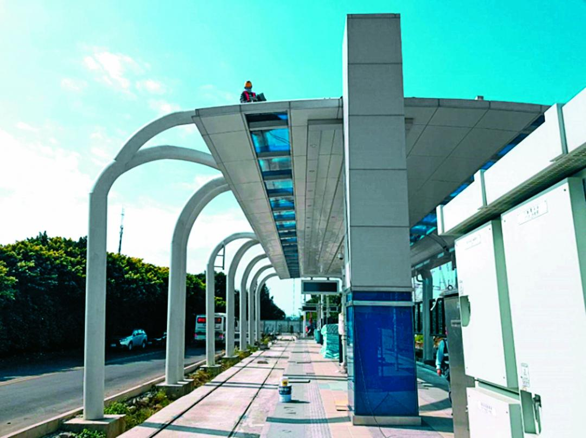
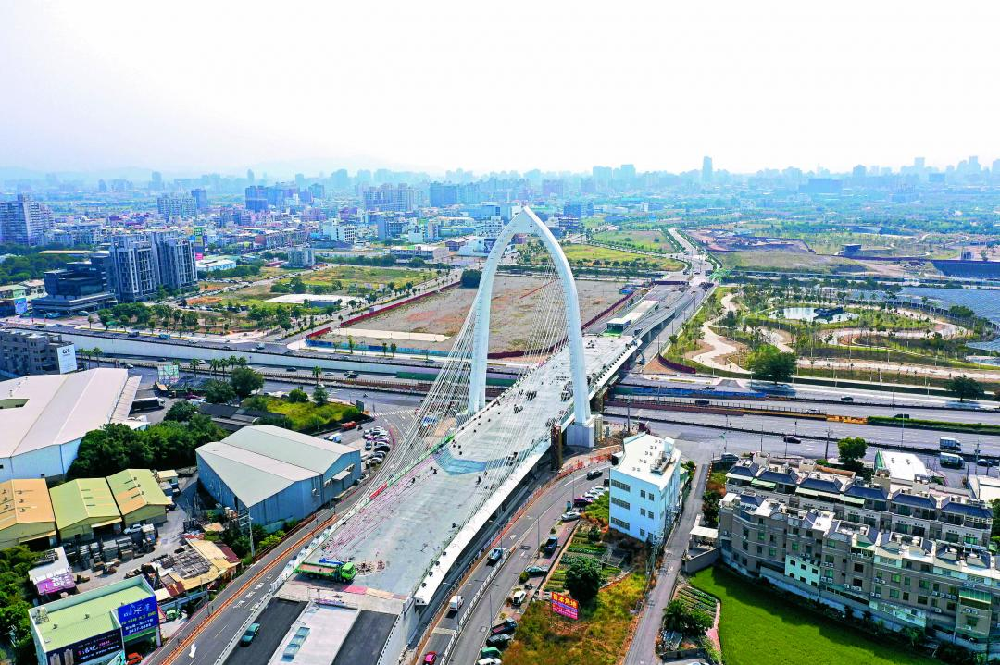
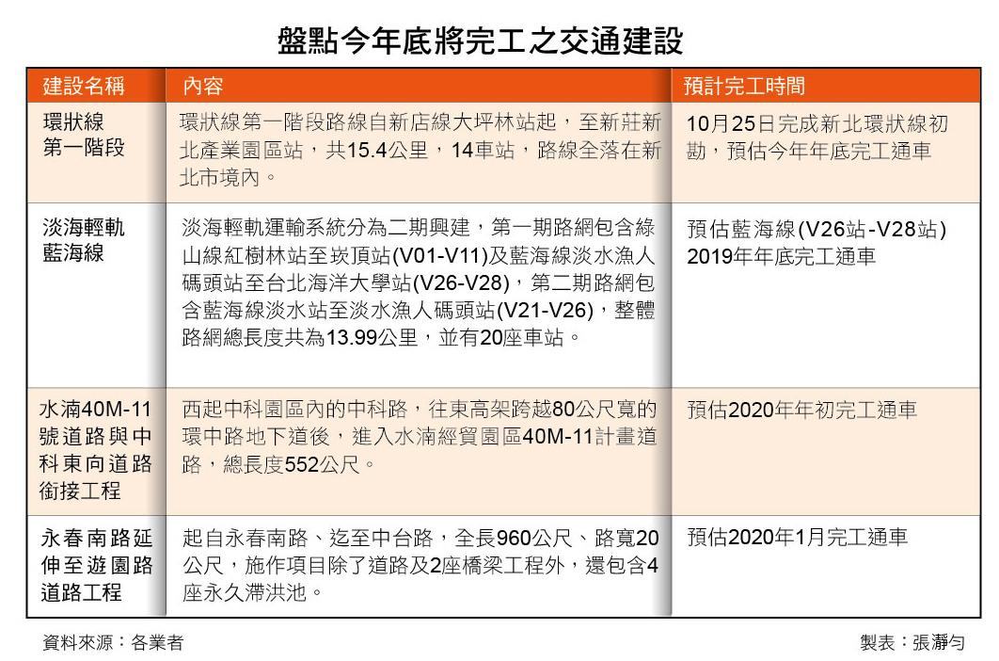

年底完工建設釋利多 交通解套、景安站3年漲4.1% - 地產天下 - 自由電子報

2019/11/16 04:30 文/記者張瀞勻
捷運環狀線第一階段將於今年年底通車，周邊已反映通車行情。(圖/新北市捷運工程局提供) 被喻為「台灣版山手線」的環狀線即將在今年年底通車，而除了環狀線為第一條所有站點皆位於新北市轄區內，備受矚目以外，還有淡海輕軌藍海線、中科-水湳銜接道路以及永春南路延伸至遊園路道路等工程，各都會區年底建設皆聚焦於交通利多，專家指出，交通建設與房市動態環環相扣，而且交通往往會在通車前反應一波。 沿著交通動線，向來是買房不敗心法，而從2009年動工，至今工程期長達10年的環狀線第一階段將於今年底通車，從新店區大坪林站至新莊區新北產業園區站，全線15.4公里，共有14個車站，這是第一條全線都位新北市境內的捷運路線，永慶房屋業管部資深經理謝志傑表示，捷運環狀線第一階段沿途經過新店、中和、板橋、新莊及五股等區域，同步串連起大台北地區的綠線、橘線、藍線、機場捷運線的轉乘交通網絡，讓大台北地區交通路網趨於完整，環狀線可說是近年來最重要的交通建設。 新北市捷運工程局也指出，環狀線兼具通勤、轉乘功能，通車後能使往來新北市都會區的乘客不必再到台北市區轉乘捷運，才能到新北市他區，像是從新店到板橋，或者新莊到板橋，可直接透過環狀線一站到底，以大坪林站至新北產業園區站而言，就可比現行車程省下約20分鐘。 環狀線沿線房價如同其他重大建設，謝志傑說明，環狀線周邊房價早於規劃期、施工期就起漲，近幾年在整體房市向下修正的市場氛圍下，環狀線周邊房價也呈現漲多回檔，其中，板橋站今年前8月平均房價與2016年同期相比下修5.3%、從每坪45萬元降至42.6萬元，主因是整體房價回檔，使板橋站周邊的豪宅也受影響而價格滑落，拉低板橋站周邊均價。 而景安站則與2016年同期相比，從每坪38.6萬元上漲至40.2萬元，漲幅達4.1%，謝志傑表示，景安站屬於早期發展的地區，生活機能良好，加上捷運中和新蘆線與環狀線雙捷運站利多加持，吸引民眾進駐，此外，區域內道路較為狹小，容易受塞車之苦，環狀線通車後，將有利於在板橋、新莊、五股等地就業的民眾上下班便利通勤，因此房價表現較其他站優異。 最後謝志傑補充，雖然環狀線第一階段受到整體房市向下修正的影響，多數站點房價都有漲多回檔的情形，但仍較其他地區有撐。而目前通車在即，利多出盡，近期房價難有太大的變動，建議如有購屋需求且能夠接受現在價格的民眾，可以開始調整購屋步調，尋找適宜自己的好屋。 預估藍海線V26站~V28站預估於今年年底完工通車。(新北市捷運工程局提供)  除了環狀線，新北市年底還有淡海輕軌藍海線即將完工，屋比房屋統計實價資料，目前藍海線沿線均價為21.1萬元，相較於前年20.8萬元，微揚1%，屋比房屋總監陳傑鳴表示，為了解決淡海居民與觀光客交通問題，新北政府積極推動淡水交通建設，綠山線於去年底通車，今年底經台北海洋大學至漁人碼頭的第一期藍海線也即將完工，預計對於紓緩淡水區域交通擁塞、不便的狀況，確實會產生部分助益。 陳傑鳴指出，藍海線規劃因串聯淡水各主要景點，也鄰近成熟商圈，加上具有河景住宅的優勢，市場估計會比「綠山線」周邊房市更受到購屋者青睞，不過，今年底將通車的藍海線一期，僅連接淡海新市鎮至漁人碼頭，周邊缺乏主要景點，估計對周邊房市帶動效果將更加有限，民眾不宜過度期待房價會有多少激情上漲反應。 陳傑鳴表示，淡海地區以2字頭建案銷售速度較快、2~3房的首購產品最熱，整體買盤仍以偏好生活機能的自住族群為主，而以藍海線整體規劃來說，年底通車的藍海線一期的「台北海洋大學站」較值得期待，因周遭推案較多，生活機能也較強，估計將有較佳的房市買氣。 中科路銜接水湳經貿園區的豎琴式斜張橋是目前全中部最高斜張橋，預計明年初完工。(台中市建設局提供)  近期土地標售、推案火熱的台中市，除了明年2020年的捷運綠線備受期待，目前二大道路銜接工程也接近完工階段，其中，串連中部科學園區與水湳經貿園區的交通脈絡，台中市政府建設局規劃興建「水湳40M-11號道路與中科東向道路銜接工程」，歷時2年將於年底完工，啟用將可分散市中心往返清水、龍井、沙鹿、大雅等地區之車流量；同樣有著交通量飽和問題的南屯精密機械園區，亦進行了「永春南路延伸至遊園路道路工程」，其可整合屯區與龍井、烏日的區域發展。 正心不動產估價師聯合事務所市場研究室特助陳孟筠表示，上述兩大工程均已接近完工階段，對當地均為一利多因素，房市也間接受惠於此，不過，基於土地取得成本高漲，近2年的房市產品為符合「消費者買得起」的概念，各大建商均難逃市場導向的趨勢，從水湳經貿園區外圍周邊推出的新案規劃即可看出端倪，坪數設定幾乎落在25~35坪，並以2房為主。 尤其「水湳40M-11號道路與中科東向道路銜接工程」串聯的水湳經貿園區，目前區內中央公園、水湳經貿園區地下停車場、水湳水資源回收中心等3大基礎建設及水湳會展中心、台中綠美圖、智慧營運中心、中台灣電影中心、水湳轉運中心五大建築已陸續招標、動工興建及完工，該區的後勢發展也備受矚目，吸引建商積極卡位插旗。 然而，買房跟著交通走，不過專家也指出，近年軌道建設通車效應趨緩，陳傑鳴指出，捷運題材對於房價的帶動，往往在開工之際已預先反應，然而輕軌載客量不比捷運，對房價帶動效果更是有限，以綠山線通車後，對新市鎮房價帶動效果，也僅止於「止跌」效果，可見一般。
 不用抽 不用搶 現在用APP看新聞 保證天天中獎 點我下載APP 按我看活動辦法